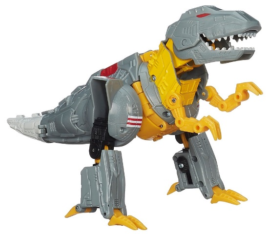

Size : Voyager
Difficulty of Transformation : Medium
Color Scheme : Milky brownish bronze, light milky gray, black, and some silver metallic turquoise
Individual Rating : 8.5
Allegiances
: Autobot
Price
: $40 (U.S.)
(NOTE: Because this set is composed of repaints,
this is not a full-blown review. This mainly covers any changes made to
the set and the color scheme, and merely compares it to the original versions
of these molds. For a review on the original AoE voyager Grimlock, go
here
.
For a review on Energon Grimlock-- the mold used for "Then" Grimlock--
go
here
.)
 Grimlock
("Now")
Grimlock
("Now")
Size
: Voyager
Difficulty of Transformation
: Medium
Color Scheme
: Milky brownish bronze,
light milky gray, black, and some silver metallic turquoise
Individual Rating
: 8.5
At first glance, this
"Evolution" 2-pack version doesn't appear to be different from the mass
release, but look closer and you'll see some minor differences. The color
scheme is still the same, of course, as are the shades of said colors used
on Grimlock. There is a bit more black on this version, however, with the
faceplate and headcrest of the robot mode painted black, along with some
extra jagged paint apps on the lower dino legs/robot arms and some black
around the dino eyes. There's also some more black plastic-- namely,
on the robot chest and teeny dino arms. This extra black is a positive,
in my opinion, with the extra paint apps on the lower legs always appreciated,
and the black chest and black face looking more menacing than the initial
paint job for this toy. There's also some extra gray as well-- namely,
the robot "skirt" pieces are now gray plastic, as well as the upper t-rex
head/jaw pieces. As opposed to the black, I consider this a negative--
it's more of that blah gray that just doesn't look great, but rather boring
and dull. There IS some silver paint added to the abdomen of the robot
mode, though. If all the gray were silver I'd change my mind on this, but
when the positives of the extra black and the negatives of the extra gray
are added together, this version of Grimlock comes out with the same score
as the initial mass-retail release of this mold.
No mold changes have
been made to this version of Grimlock.
 Grimlock
("Then")
Grimlock
("Then")

Size
: Deluxe
Difficulty of Transformation
: Medium
Color Scheme
: Gray, orangish "cheese"
yellow, and some black, white, red, bone white, moderately light green,
and moderately light blue
Individual Rating
: 7.4
Like the "Now" Grimlock,
the "Then" Grimlock only has some minor changes made to his deco and overall
color scheme-- it's the MOLD that's the big surprise, here. Energon Grimlock,
really?
There's
a mold I never thought I'd see again, especially
10 years after its first and only release. What about
Classics
Grimlock
, or
Fall of Cybertron
Grimlock
?
Anyways, Energon-and-now-pre-AoE Grimlock doesn't really have a lot of
changes to his overall color scheme-- he's still gray and an orangish yellow
that looks like cheese. The light gray plastic from the original is now
also that "cheese" yellow-- namely, the dino arms, leg claws and the top
of the robot chest-- overall I think the light gray looked better, particularly
on the claws. The very dark gray from the original is now black, which
I think looks marginally better. As for deco changes, the red circular
paint apps on the dino hips/robot shoulders are missing, but in its place
are little paint apps done up to make Grimlock look more like he has his
G1 details-- red-and-white stripes on the hips/shoulders, white squares
on the robot hips, and a rather nice trio of blue, red, and green paint
apps down the dino lower back/upper back that also carries over nicely
to the robot legs. A bit of bone white has also been added to the tip of
Grimlock's tail, as opposed to the yellow from the original-- another improvement,
in my opinion. Also, a bit of red on the sides of Grimlock's main dino
body and on the robot hips has ben added, adding a bit more color variety.
Grimlock doesn't APPEAR
to have any mold changes, but his fist holes have been changed slightly
to accomodate 5mm weapons, such as the
G1 Razorclaw
(!) sword
that he comes with in-package. Talk about taking an accessory
from an utterly random source...
This "Evolution" 2-pack
is an easy pass for all but the biggest Grimlock completists/enthusiasts.
The movie Grimlock redeco is minor and you're not missing out on anything
if you skip it in favor of the mass retail version. As for the "Then" Grimlock
toy, he's only a deluxe-- making the $40 U.S. retail price about $10 too
expensive, particularly since multi-packs often have a slight discount.
He's also pretty much the worst Grimlock mold they could have chosen from
the ol' archives, isn't much different from Energon Grimlock, and doesn't
have the bonus of coming with a Dinobot that he combines with.
Reviews by Beastbot
(Pics from Hasbro .)